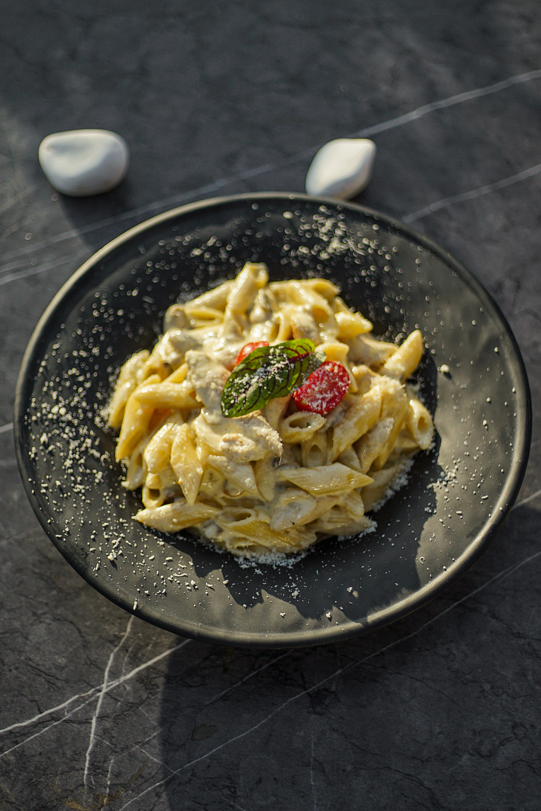

Fettucine Carbonara Recipe
Description
Easy restaurant quality carbonara. I am asked to make this again and again from both friends and family!.
Ingredients
-
1 pound dry fettuccine noodles
- 8 slices bacon
- 4 eggs
- ½ cup grated Parmesan cheese
- 1 1/4 cups heavy cream
- 1 pinch ground black pepper to taste
Directions
- Step 1: Bring a large pot of lightly salted water to a boil. Add fettuccini and cook for 8 to 10 minutes or until al dente; drain.
- Step 2: Fry bacon in skillet over medium heat until crispy, remove and drain on paper towel. Chop with knife into bits.
- Step 3: Return the pan to a very low heat and cook for 1 to 2 minutes, or until slightly thickened. Don't overheat or the eggs will scramble. Season well with black pepper and serve.
- Step 4: Serve hot and enjoy!